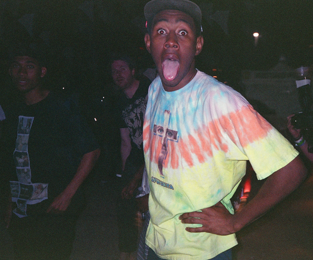
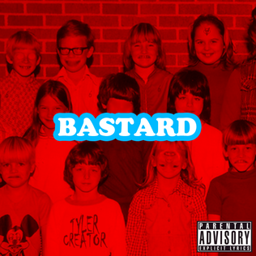
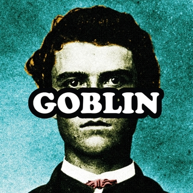
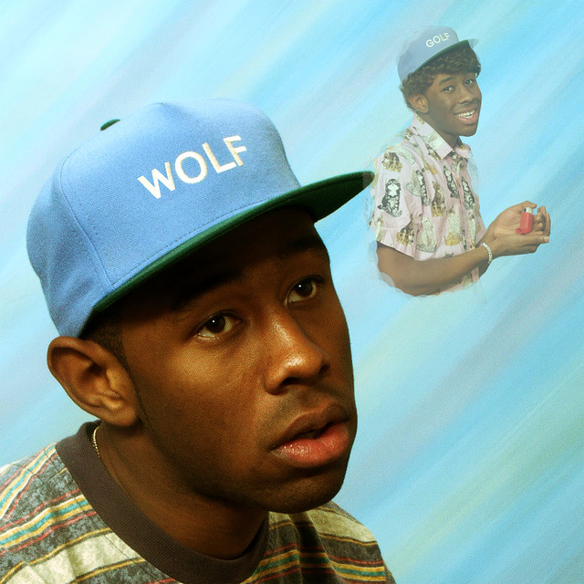
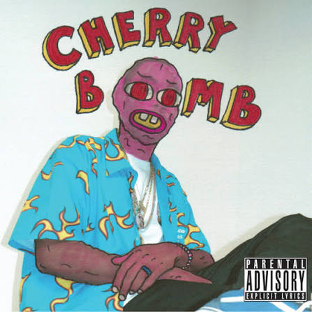
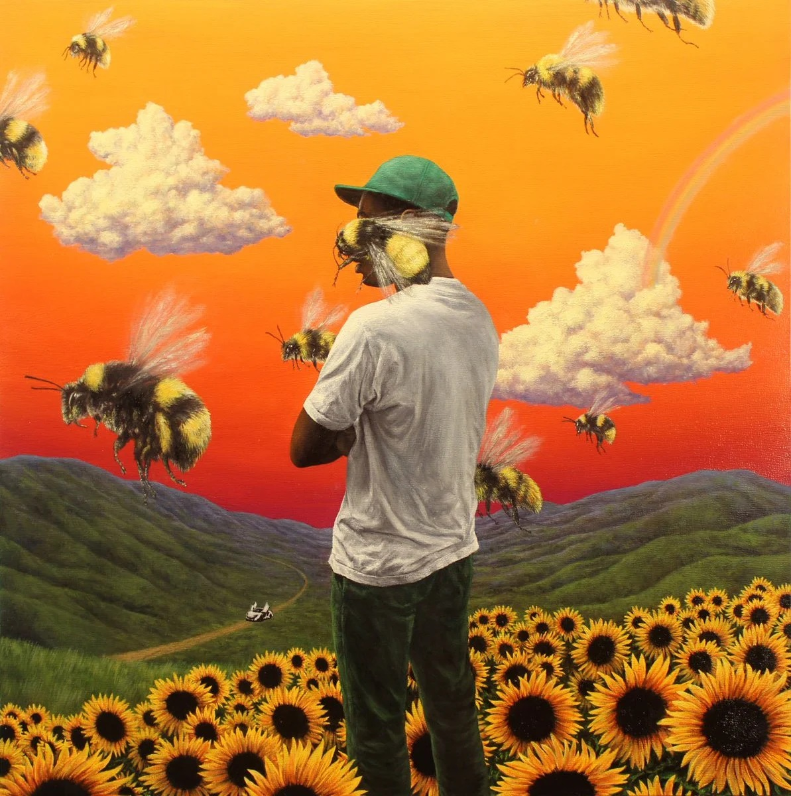
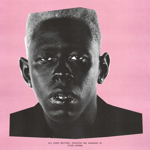
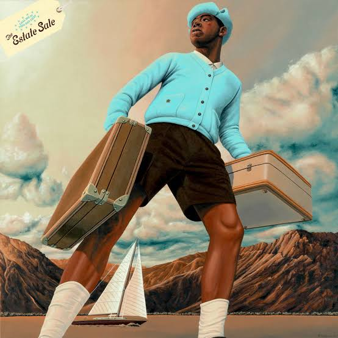
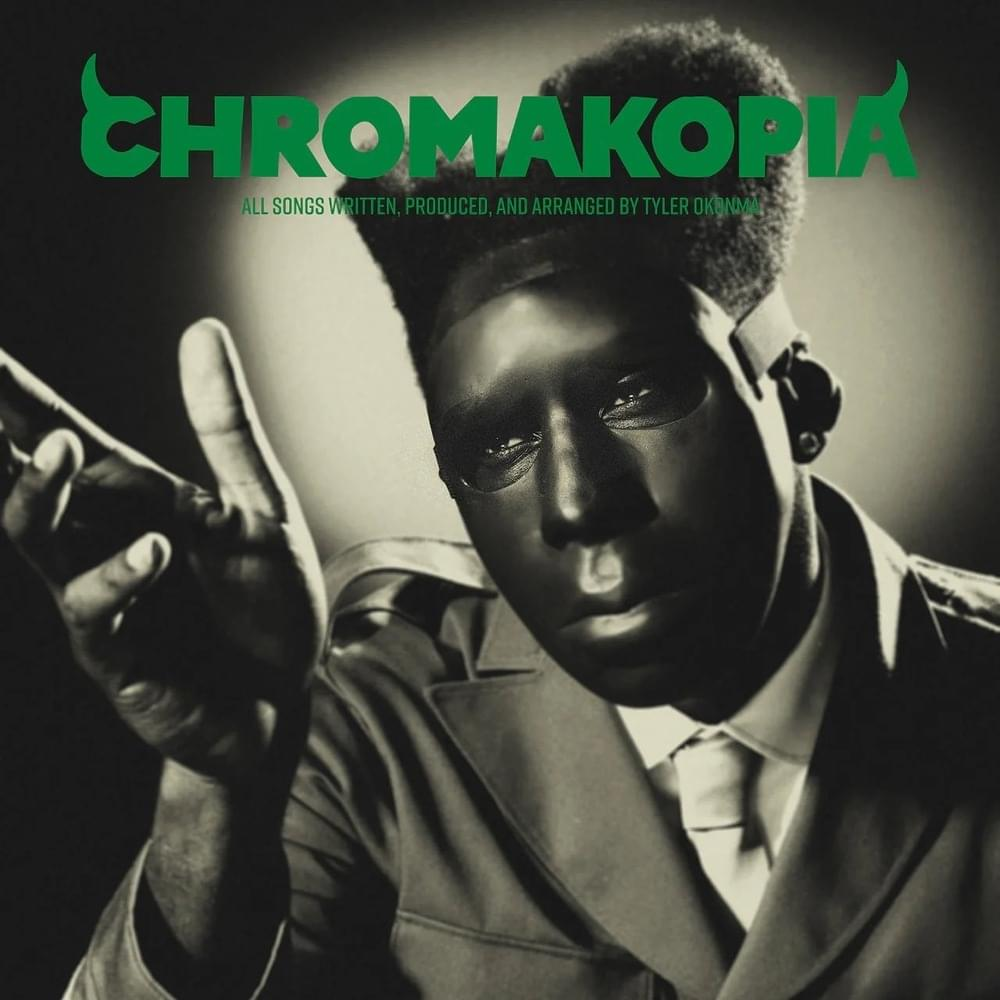
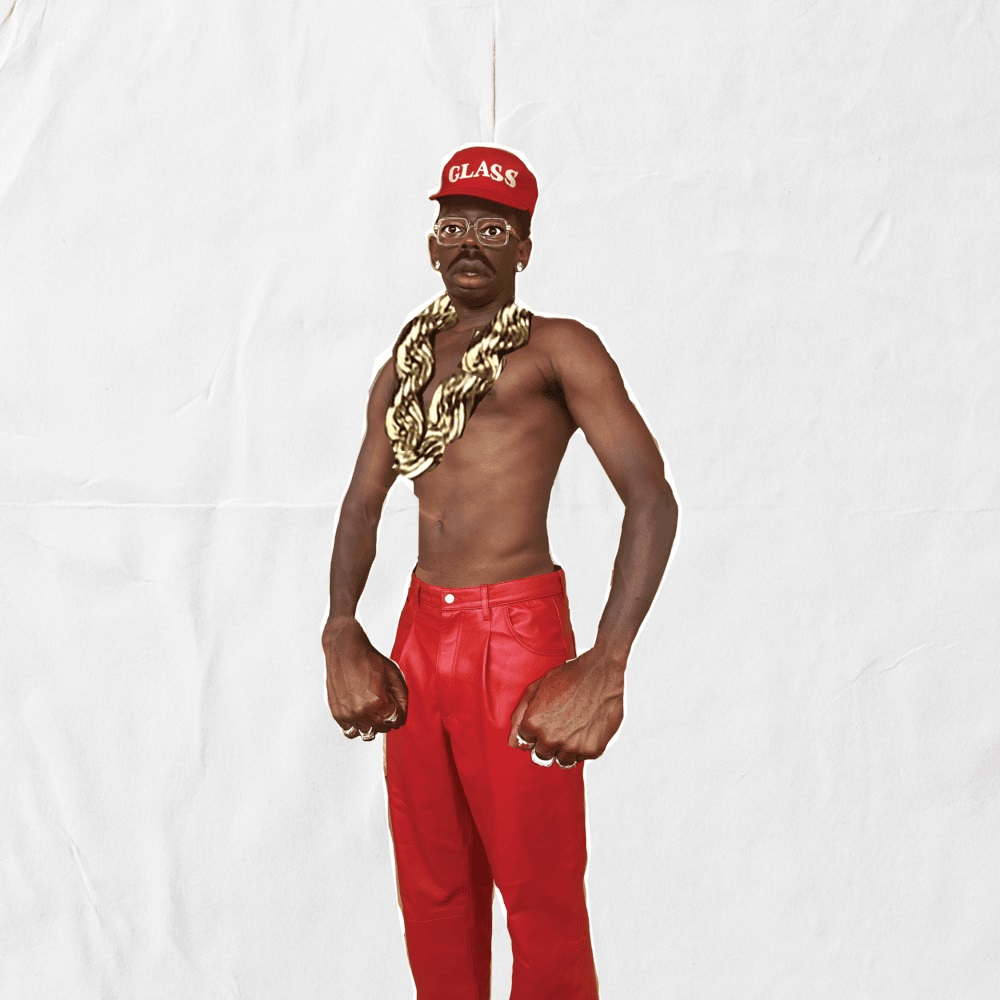

Quien es Tyler, The Creator?
Tyler Gregory Okonma, conocido mundialmente como
Tyler, The Creator, es uno de los artistas mas particulares
e influyentes del hip-hop contemporaneo. Nacido el 6 de marzo
de 1991 en Hawthorne, California, Tyler se convirtio con el
tiempo en mucho mas que un rapero: es productor, compositor,
director creativo y una figura con un control
artistico muy marcado sobre todo lo que crea.
Su carrera comenzo dentro de la escena alternativa de Los
angeles y evoluciono desde un sonido oscuro y provocador hacia
una musica mucho mas melodica, sofisticada y emocional.
Actualmente es reconocido por combinar hip-hop con soul,
jazz, funk, R&B y elementos experimentales.
Sus comienzos

Antes de convertirse en una estrella internacional, Tyler
comenzo a producir musica por su cuenta y a experimentar con
distintos sonidos. En 2007 participo en la creacion de
Odd Future, colectivo que reunio a artistas como Earl
Sweatshirt, Frank Ocean, Syd y otros musicos de Los angeles.
Odd Future se caracterizo por su actitud independiente,
sus producciones poco convencionales y su rechazo a las reglas
tradicionales de la industria musical. Tyler no solamente
rapeaba: tambien producia y participaba en la
construccion visual del colectivo.
Sus influencias
Pharrell Williams
Una de las mayores influencias musicales de Tyler,
especialmente por su produccion y utilizacion de
melodias.
Jazz y Soul
Generos que fueron adquiriendo cada vez mas importancia
en sus producciones a medida que evolucionaba.
Funk y R&B
Elementos fundamentales de su sonido moderno y de su
manera de construir ambientes musicales.
Discografia
La carrera musical de Tyler puede entenderse a traves de la
transformacion de cada uno de sus proyectos. Cada album
representa una etapa diferente de su vida y una nueva
exploracion musical.

Bastard
2009 . Mixtape
Sonido:
Hip-hop alternativo, horrorcore, sintetizadores oscuros
y producciones minimalistas.
Etapa personal:
Representa los primeros anos de Tyler como artista,
cuando todavia estaba desarrollando su identidad y
experimentaba con una estetica provocadora.
Impacto:
Fue fundamental para presentar el estilo de Tyler y
establecer las bases de lo que posteriormente seria
su carrera.
Escuchar album

Goblin
2011
Sonido:
Hip-hop alternativo, sonidos industriales, jazz y
producciones oscuras.
Etapa personal:
Tyler profundiza en conflictos internos y utiliza
diferentes personajes y voces para construir una
representacion de su mundo interior.
Impacto:
Fue el album que ayudo a convertir a Tyler en una
figura conocida fuera del circuito underground.
Escuchar album

Wolf
2013
Sonido:
Hip-hop, jazz, soul, funk, sintetizadores y melodias
mas desarrolladas.
Etapa personal:
Tyler comienza a alejarse de la agresividad de sus
primeros trabajos y desarrolla un universo narrativo
mucho mas amplio.
Impacto:
Demostro que Tyler podia evolucionar musicalmente sin
abandonar su identidad experimental.
Escuchar album

Cherry Bomb
2015
Sonido:
Hip-hop, jazz, funk, soul, rock y electronica,
utilizando sonidos distorsionados y estructuras
poco convencionales.
Etapa personal:
Representa una etapa de experimentacion extrema,
en la que Tyler buscaba romper con las expectativas
que existian sobre su musica.
Impacto:
Funciono como puente entre su etapa mas agresiva y
el sonido mucho mas melodico que apareceria despues.
Escuchar album

Flower Boy
2017
Sonido:
Soul, jazz, R&B, funk, hip-hop y pop, con producciones
mucho mas calidas y melodicas.
Etapa personal:
Tyler muestra una faceta mucho mas vulnerable y habla
sobre soledad, aislamiento, relaciones e identidad.
Impacto:
Fue uno de los momentos mas importantes de su
transformacion artistica y recibio una nominacion
al Grammy por Mejor album de Rap.
Escuchar album

IGOR
2019
Sonido:
Soul, funk, R&B, hip-hop experimental y sintetizadores,
acompanados de voces modificadas.
Etapa personal:
El album explora el amor, los celos, la dependencia,
la perdida y la aceptacion.
Impacto:
Se convirtio en uno de los trabajos mas reconocidos
de Tyler y gano el Grammy a Mejor album de Rap.
Escuchar album

CALL ME IF YOU GET LOST
2021
Sonido:
Hip-hop, jazz, soul y samples, recuperando una
estetica mucho mas cercana al rap tradicional.
Etapa personal:
Tyler crea el personaje de Tyler Baudelaire y utiliza
el lujo, los viajes y el exito como parte de la
narrativa.
Impacto:
Gano el Grammy a Mejor album de Rap en 2022 y
demostro que Tyler podia volver al rap tradicional
despues de la experimentacion de IGOR.
Escuchar album

CHROMAKOPIA
2024
Sonido:
Rap, soul, jazz, R&B, funk y produccion experimental.
Etapa personal:
Tyler reflexiona sobre el crecimiento, la identidad,
las relaciones familiares, las expectativas y el
paso del tiempo.
Impacto:
Representa una etapa mas madura de su carrera y
continua mostrando su capacidad para combinar
diferentes generos.
Escuchar album

DON'T TAP THE GLASS
2025
Sonido:
Hip-hop, funk, R&B y produccion electronica,
con un enfoque especialmente dinamico.
Etapa personal:
Despues de una etapa mas reflexiva, Tyler vuelve a
enfocarse en la energia, el movimiento y la experiencia
fisica de la musica.
Impacto:
Continua la evolucion de Tyler como productor y
demuestra que sigue buscando nuevas formas de
experimentar con su sonido.
Escuchar album
Una evolucion constante
La carrera de Tyler, The Creator puede entenderse como una
sucesion de transformaciones. Desde el Tyler provocador de
Bastard y Goblin, pasando por la experimentacion de Wolf y
Cherry Bomb, hasta la vulnerabilidad de Flower Boy e IGOR,
cada proyecto representa una etapa diferente.
Su musica demuestra que un artista no necesita mantenerse
dentro de un unico genero. Tyler ha utilizado hip-hop, soul,
jazz, funk, R&B, rock y electronica para construir una
identidad propia. Su carrera se caracteriza principalmente
por una idea: evolucionar antes que repetirse.